Chapter 2 Data visualization
Data graphics provide one of the most accessible, compelling, and expressive modes to investigate and depict patterns in data. This chapter will motivate why well-designed data graphics are important and describe a taxonomy for understanding their composition. If you are seeing this material for the first time, you will never look at data graphics the same way again—yours will soon be a more critical lens.
2.1 The 2012 federal election cycle
Every four years, the presidential election draws an enormous amount of interest in the United States. The most prominent candidates announce their candidacy nearly two years before the November elections, beginning the process of raising the hundreds of millions of dollars necessary to orchestrate a national campaign. In many ways, the experience of running a successful presidential campaign is in itself evidence of the leadership and organizational skills necessary to be commander-in-chief.
Voices from all parts of the political spectrum are critical of the influence of money upon political campaigns. While the contributions from individual citizens to individual candidates are limited in various ways, the Supreme Court’s decision in Citizens United v. Federal Election Commission allows unlimited political spending by corporations (non-profit or otherwise). This has resulted in a system of committees (most notably, political action committees, PACs) that can accept unlimited contributions and spend them on behalf of (or against) a particular candidate or set of candidates. Unraveling the complicated network of campaign spending is a subject of great interest.
To perform that unraveling is an exercise in data science. The Federal Election Commission (FEC) maintains a website with logs of not only all of the ($200 or more) contributions made by individuals to candidates and committees, but also of spending by committees on behalf of (and against) candidates. Of course, the FEC also maintains data on which candidates win elections, and by how much. These data sources are separate, and it requires some ingenuity to piece them together. We will develop these skills in Chapters 4–6, but for now, we will focus on graphical displays of the information that can be gleaned from these data. Our emphasis at this stage is on making intelligent decisions about how to display certain data, so that a clear (and correct) message is delivered.
Among the most basic questions is: How much money did each candidate raise? However, the convoluted campaign finance network makes even this simple question difficult to answer, and—perhaps more importantly—less meaningful than we might think. A better question is: On whose candidacy was the most money spent? In Figure 2.1, we show a bar graph of the amount of money (in millions of dollars) that were spent by committees on particular candidates during the general election phase of the 2012 federal election cycle. This includes candidates for president, the United States Senate, and the United States House of Representatives. Only candidates on whose campaign at least $4 million was spent are included in Figure 2.1.
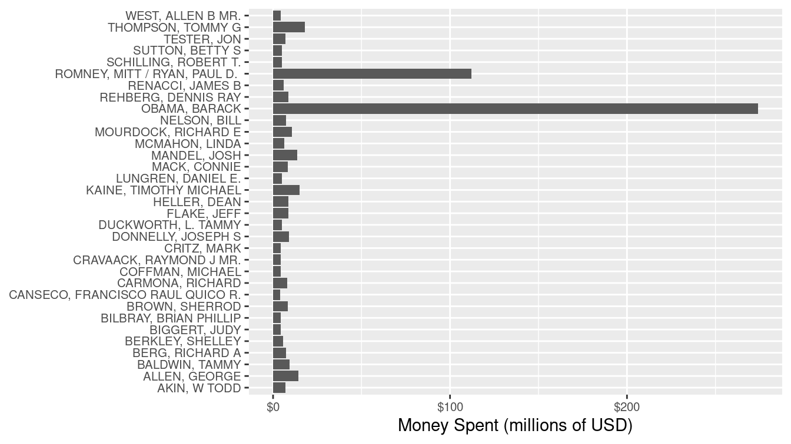
Figure 2.1: Amount of money spent on individual candidates in the general election phase of the 2012 federal election cycle, in millions of dollars. Candidacies with at least $4 million in spending are depicted.
It seems clear from Figure 2.1 that President Barack Obama’s re-election campaign spent far more money than any other candidate, in particular more than doubling the amount of money spent by his Republican challenger, Mitt Romney. However, committees are not limited to spending money in support of a candidate—they can also spend money against a particular candidate (attack ads). In Figure 2.2, we separate the same spending shown in Figure 2.1 by whether the money was spent for or against the candidate.
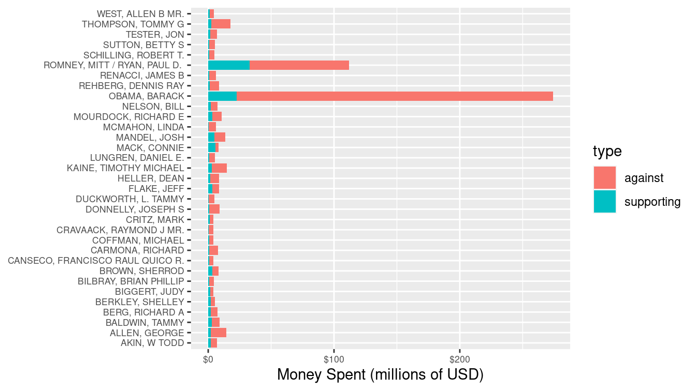
Figure 2.2: Amount of money spent on individual candidates in the general election phase of the 2012 federal election cycle, in millions of dollars, broken down by type of spending. Candidacies with at least $4 million in spending are depicted.
In these elections, most of the money was spent against each candidate, and in particular, $251 million of the $274 million spent on President Obama’s campaign was spent against his candidacy. Similarly, most of the money spent on Mitt Romney’s campaign was against him, but the percentage of negative spending on Romney’s campaign (70%) was lower than that of Obama (92%).
The difference between Figure 2.1 and Figure 2.2 is that in the latter we have used color to bring a third variable (type of spending) into the plot. This allows us to make a clear comparison that importantly changes the conclusions we might draw from the former plot. In particular, Figure 2.1 makes it appear as though President Obama’s war chest dwarfed that of Romney, when in fact the opposite was true.
2.1.1 Are these two groups different?
Since so much more money was spent attacking Obama’s campaign than Romney’s, you might conclude from Figure 2.2 that Republicans were more successful in fundraising during this election cycle. In Figure 2.3, we can confirm that this was indeed the case, since more money was spent supporting Republican candidates than Democrats, and more money was spent attacking Democratic candidates than Republican. It also seems clear from Figure 2.3 that nearly all of the money was spent on either Democrats or Republicans.2
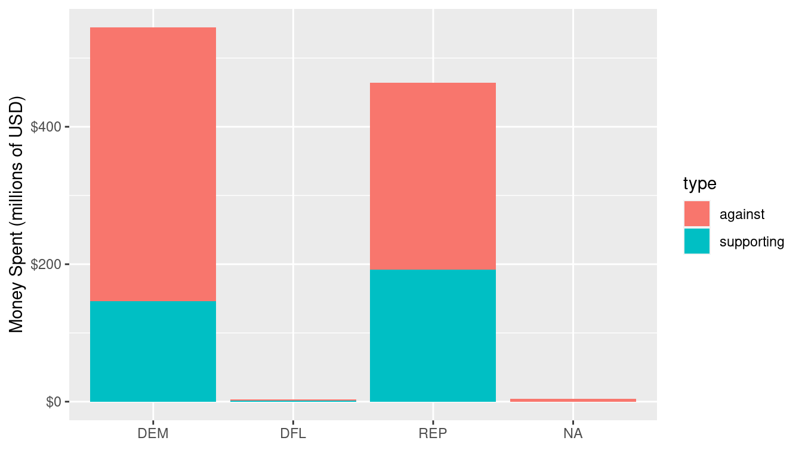
Figure 2.3: Amount of money spent on individual candidacies by political party affiliation during the general election phase of the 2012 federal election cycle.
However, the question of whether the money spent on candidates really differed by party affiliation is a bit thornier. As we saw above, the presidential election dominated the political donations in this election cycle. Romney faced a serious disadvantage in trying to unseat an incumbent president. In this case, the office being sought is a confounding variable. By further subdividing the contributions in Figure 2.3 by the office being sought, we can see in Figure 2.4 that while more money was spent supporting Republican candidates for all elective branches of government, it was only in the presidential election that more money was spent attacking Democratic candidates. In fact, slightly more money was spent attacking Republican House and Senate candidates.
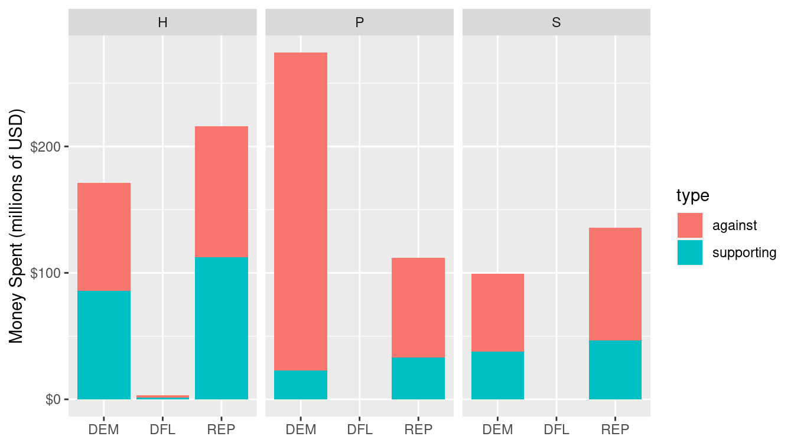
Figure 2.4: Amount of money spent on individual candidacies by political party affiliation during the general election phase of the 2012 federal election cycle, broken down by office being sought (House, President, or Senate).
Note that Figures 2.3 and 2.4 display the same data. In Figure 2.4, we have an additional variable that provides an important clue into the mystery of campaign finance. Our choice to include that variable results in Figure 2.4 conveying substantially more meaning than Figure 2.3, even though both figures are “correct.” In this chapter, we will begin to develop a framework for creating principled data graphics.
2.1.2 Graphing variation
One theme that arose during the presidential election was the allegation that Romney’s campaign was supported by a few rich donors, whereas Obama’s support came from people across the economic spectrum. If this were true, then we would expect to see a difference in the distribution of donation amounts between the two candidates. In particular, we would expect to see this in the histograms shown in Figure 2.5, which summarize the more than one million donations made by individuals to the two major committees that supported each candidate (for Obama, Obama for America, and the Obama Victory Fund 2012; for Romney, Romney for President, and Romney Victory 2012). We do see some evidence for this claim in Figure 2.5, Obama did appear to receive more smaller donations, but the evidence is far from conclusive. One problem is that both candidates received many small donations but just a few larger donations; the scale on the horizontal axis makes it difficult to actually see what is going on. Secondly, the histograms are hard to compare in a side-by-side placement. Finally, we have lumped all of the donations from both phases of the presidential election (i.e., primary vs. general) in together.
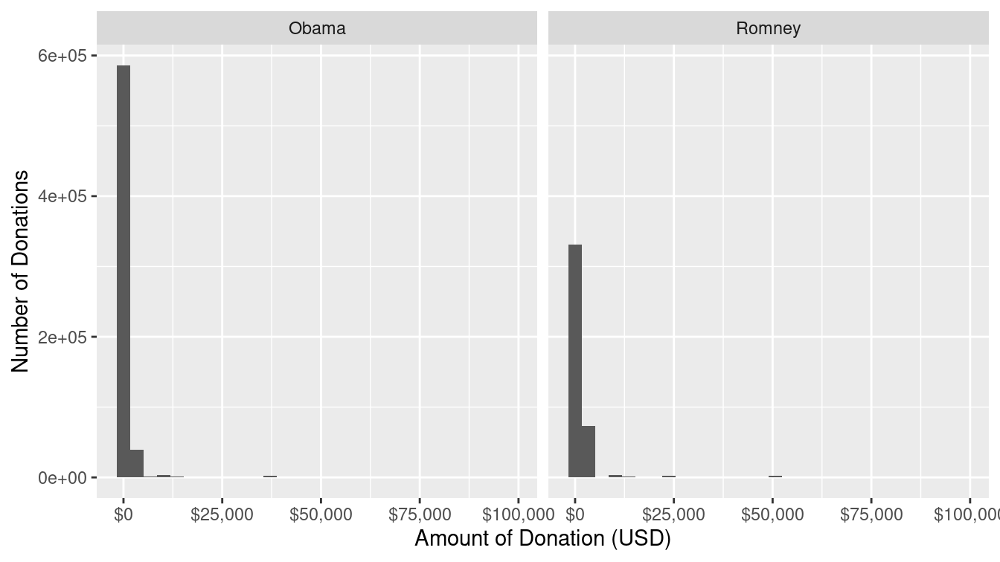
Figure 2.5: Donations made by individuals to the PACs supporting the two major presidential candidates in the 2012 election.
In Figure 2.6, we remedy these issues by (1) using density curves instead of histograms, so that we can compare the distributions directly, (2) plotting the logarithm of the donation amount on the horizontal scale to focus on the data that are important, and (3) separating the donations by the phase of the election. Figure 2.6 allows us to make more nuanced conclusions. The right panel supports the allegation that Obama’s donations came from a broader base during the primary election phase. It does appear that more of Obama’s donations came in smaller amounts during this phase of the election. However, in the general phase, there is virtually no difference in the distribution of donations made to either campaign.
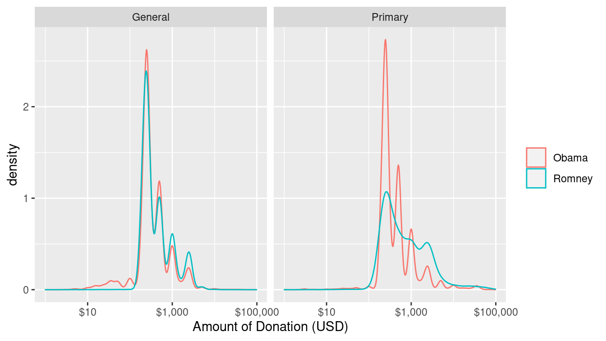
Figure 2.6: Donations made by individuals to the PACs supporting the two major presidential candidates in the 2012 election, separated by election phase.
2.1.3 Examining relationships among variables
Naturally, the biggest questions raised by the Citizens United decision are about the influence of money in elections. If campaign spending is unlimited, does this mean that the candidate who generates the most spending on their behalf will earn the most votes? One way that we might address this question is to compare the amount of money spent on each candidate in each election with the number of votes that candidate earned. Statisticians will want to know the correlation between these two quantities—when one is high, is the other one likely to be high as well?
Since all 435 members of the United States House of Representatives are elected every two years, and the districts contain roughly the same number of people, House elections provide a nice data set to make this type of comparison. In Figure 2.7, we show a simple scatterplot relating the number of dollars spent on behalf of the Democratic candidate against the number of votes that candidate earned for each of the House elections.
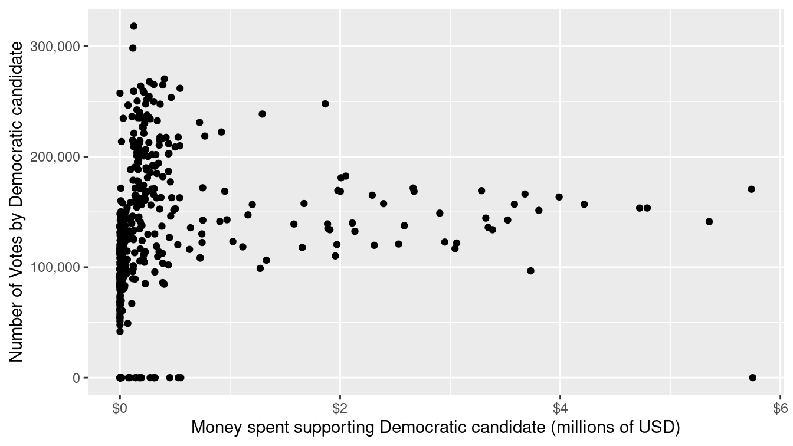
Figure 2.7: Scatterplot illustrating the relationship between number of dollars spent supporting and number of votes earned by Democrats in 2012 elections for the House of Representatives.
The relationship between the two quantities depicted in Figure 2.7 is very weak. It does not appear that candidates who benefited more from campaign spending earned more votes. However, the comparison in Figure 2.7 is misleading. On both axes, it is not the amount that is important, but the proportion. Although the population of each congressional district is similar, they are not the same, and voter turnout will vary based on a variety of factors. By comparing the proportion of the vote, we can control for the size of the voting population in each district. Similarly, it makes less sense to focus on the total amount of money spent, as opposed to the proportion of money spent. In Figure 2.8, we present the same comparison, but with both axes scaled to proportions.
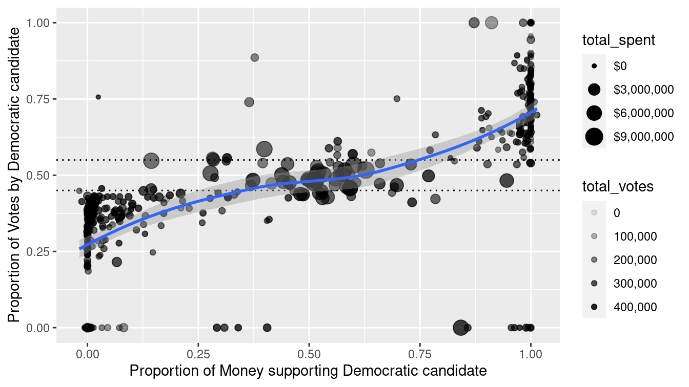
Figure 2.8: Scatterplot illustrating the relationship between proportion of dollars spent supporting and proportion of votes earned by Democrats in the 2012 House of Representatives elections. Each dot represents one district. The size of each dot is proportional to the total spending in that election, and the alpha transparency of each dot is proportional to the total number of votes in that district.
Figure 2.8 captures many nuances that were impossible to see in Figure 2.7. First, there does appear to be a positive association between the percentage of money supporting a candidate and the percentage of votes that they earn. However, that relationship is of greatest interest towards the center of the plot, where elections are actually contested. Outside of this region, one candidate wins more than 55% of the vote. In this case, there is usually very little money spent. These are considered “safe” House elections—you can see these points on the plot because most of them are close to \(x=0\) or \(x=1\), and the dots are very small. For example, one of the points in the lower-left corner is the 8th district in Ohio, which was won by the then Speaker of the House John Boehner, who ran unopposed. The election in which the most money was spent (over $11 million) was also in Ohio. In the 16th district, Republican incumbent Jim Renacci narrowly defeated Democratic challenger Betty Sutton, who was herself an incumbent from the 13th district. This battle was made possible through decennial redistricting (see Chapter 17). Of the money spent in this election, 51.2% was in support of Sutton but she earned only 48.0% of the votes.
In the center of the plot, the dots are bigger, indicating that more money is being spent on these contested elections. Of course this makes sense, since candidates who are fighting for their political lives are more likely to fundraise aggressively. Nevertheless, the evidence that more financial support correlates with more votes in contested elections is relatively weak.
2.1.4 Networks
Not all relationships among variables are sensibly expressed by a scatterplot. Another way in which variables can be related is in the form of a network (we will discuss these in more detail in Chapter 20). In this case, campaign funding has a network structure in which individuals donate money to committees, and committees then spend money on behalf of candidates. While the national campaign funding network is far too complex to show here, in Figure 2.9 we display the funding network for candidates from Massachusetts.
In Figure 2.9, we see that the two campaigns that benefited the most from committee spending were Republicans Mitt Romney and Scott Brown. This is not surprising, since Romney was running for president and received massive donations from the Republican National Committee, while Brown was running to keep his Senate seat in a heavily Democratic state against a strong challenger, Elizabeth Warren. Both men lost their elections. The constellation of blue dots are the congressional delegation from Massachusetts, all of whom are Democrats.
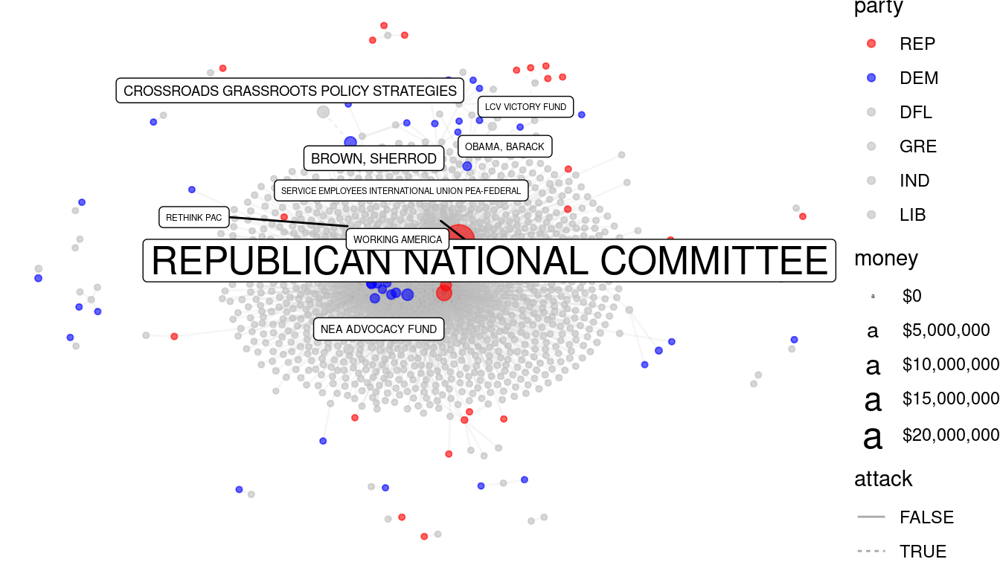
Figure 2.9: Campaign funding network for candidates from Massachusetts, 2012 federal elections. Each edge represents a contribution from a PAC to a candidate.
2.2 Composing data graphics
Former New York Times intern and FlowingData.com creator Nathan Yau makes the analogy that creating data graphics is like cooking: Anyone can learn to type graphical commands and generate plots on the computer. Similarly, anyone can heat up food in a microwave. What separates a high-quality visualization from a plain one are the same elements that separate great chefs from novices: mastery of their tools, knowledge of their ingredients, insight, and creativity (Yau 2013). In this section, we present a framework—rooted in scientific research—for understanding data graphics. Our hope is that by internalizing these ideas you will refine your data graphics palette.
2.2.1 A taxonomy for data graphics
The taxonomy presented in Yau (2013) provides a systematic way of thinking about how data graphics convey specific pieces of information and how they could be improved. A complementary grammar of graphics (Wilkinson et al. 2005) is implemented by Hadley Wickham in the ggplot2 graphics package (Hadley Wickham 2016), albeit using slightly different terminology. For clarity, we will postpone discussion of ggplot2 until Chapter 3. (To extend our cooking analogy, you must learn to taste before you can learn to cook well.)
In this framework, data graphics can be understood in terms of four basic elements: visual cues, coordinate systems, scale, and context. In what follows, we explicate this vision and append a few additional items (facets and layers). This section should equip the careful reader with the ability to systematically break down data graphics, enabling a more critical analysis of their content.
2.2.1.1 Visual Cues
Visual cues are graphical elements that draw the eye to what you want your audience to focus upon. They are the fundamental building blocks of data graphics, and the choice of which visual cues to use to represent which quantities is the central question for the data graphic composer. Table 2.1 identifies nine distinct visual cues, for which we also list whether that cue is used to encode a numerical or categorical quantity:
| Visual Cue | Variable Type | Question |
|---|---|---|
| Position | numerical | where in relation to other things? |
| Length | numerical | how big (in one dimension)? |
| Angle | numerical | how wide? parallel to something else? |
| Direction | numerical | at what slope? in a time series, going up or down? |
| Shape | categorical | belonging to which group? |
| Area | numerical | how big (in two dimensions)? |
| Volume | numerical | how big (in three dimensions)? |
| Shade | either | to what extent? how severely? |
| Color | either | to what extent? how severely? |
Research into graphical perception (dating back to the mid-1980s) has shown that human beings’ ability to perceive differences in magnitude accurately descends in this order (Cleveland and McGill 1984). That is, humans are quite good at accurately perceiving differences in position (e.g., how much taller one bar is than another), but not as good at perceiving differences in angles. This is one reason why many people prefer bar charts to pie charts. Our relatively poor ability to perceive differences in color is a major factor in the relatively low opinion of heat maps that many data scientists have.
2.2.1.2 Coordinate systems
How are the data points organized? While any number of coordinate systems are possible, three are most common:
- Cartesian: The familiar \((x,y)\)-rectangular coordinate system with two perpendicular axes.
- Polar: The radial analog of the Cartesian system with points identified by their radius \(\rho\) and angle \(\theta\).
- Geographic: The increasingly important system in which we have locations on the curved surface of the Earth, but we are trying to represent these locations in a flat two-dimensional plane. We will discuss such geospatial analyses in Chapter 17.
An appropriate choice for a coordinate system is critical in representing one’s data accurately, since, for example, displaying geospatial data like airline routes on a flat Cartesian plane can lead to gross distortions of reality (see Section 17.3.2).
2.2.1.3 Scale
Scales translate values into visual cues. The choice of scale is often crucial. The central question is how does distance in the data graphic translate into meaningful differences in quantity? Each coordinate axis can have its own scale, for which we have three different choices:
- Numeric: A numeric quantity is most commonly set on a linear, logarithmic, or percentage scale. Note that a logarithmic scale does not have the property that, say, a one-centimeter difference in position corresponds to an equal difference in quantity anywhere on the scale.
- Categorical: A categorical variable may have no ordering (e.g., Democrat, Republican, or Independent), or it may be ordinal (e.g., never, former, or current smoker).
- Time: A numeric quantity that has some special properties. First, because of the calendar, it can be demarcated by a series of different units (e.g., year, month, day, etc.). Second, it can be considered periodically (or cyclically) as a “wrap-around” scale. Time is also so commonly used and misused that it warrants careful consideration.
Misleading with scale is easy, since it has the potential to completely distort the relative positions of data points in any graphic.
2.2.1.4 Context
The purpose of data graphics is to help the viewer make meaningful comparisons, but a bad data graphic can do just the opposite: It can instead focus the viewer’s attention on meaningless artifacts, or ignore crucial pieces of relevant but external knowledge. Context can be added to data graphics in the form of titles or subtitles that explain what is being shown, axis labels that make it clear how units and scale are depicted, or reference points or lines that contribute relevant external information. While one should avoid cluttering up a data graphic with excessive annotations, it is necessary to provide proper context.
2.2.1.5 Small multiples and layers
One of the fundamental challenges of creating data graphics is condensing multivariate information into a two-dimensional image. While three-dimensional images are occasionally useful, they are often more confusing than anything else. Instead, here are three common ways of incorporating more variables into a two-dimensional data graphic:
- Small multiples: Also known as facets, a single data graphic can be composed of several small multiples of the same basic plot, with one (discrete) variable changing in each of the small sub-images.
- Layers: It is sometimes appropriate to draw a new layer on top of an existing data graphic. This new layer can provide context or comparison, but there is a limit to how many layers humans can reliably parse.
- Animation: If time is the additional variable, then an animation can sometimes effectively convey changes in that variable. Of course, this doesn’t work on the printed page and makes it impossible for the user to see all the data at once.
2.2.2 Color
Color is one of the flashiest, but most misperceived and misused visual cues. In making color choices, there are a few key ideas that are important for any data scientist to understand.
First, as we saw above, color and its monochromatic cousin shade are two of the most poorly perceived visual cues. Thus, while potentially useful for a small number of levels of a categorical variable, color and shade are not particularly faithful ways to represent numerical variables—especially if small differences in those quantities are important to distinguish. This means that while color can be visually appealing to humans, it often isn’t as informative as we might hope. For two numeric variables, it is hard to think of examples where color and shade would be more useful than position. Where color can be most effective is to represent a third or fourth numeric quantity on a scatterplot—once the two position cues have been exhausted.
Second, approximately 8% of the population—most of whom are men—have some form of color blindness. Most commonly, this renders them incapable of seeing colors accurately, most notably of distinguishing between red and green. Compounding the problem, many of these people do not know that they are color-blind. Thus, for professional graphics it is worth thinking carefully about which colors to use. The National Football League famously failed to account for this in a 2015 game in which the Buffalo Bills wore all-red jerseys and the New York Jets wore all-green, leaving colorblind fans unable to distinguish one team from the other!
To prevent issues with color blindness, avoid contrasting red with green in data graphics. As a bonus, your plots won’t seem Christmas-y!
Thankfully, we have been freed from the burden of having to create such intelligent palettes by the research of Cynthia Brewer, creator of the ColorBrewer website (and inspiration for the RColorBrewer R package). Brewer has created colorblind-safe palettes in a variety of hues for three different types of numeric data in a single variable:
- Sequential: The ordering of the data has only one direction. Positive integers are sequential because they can only go up: they can’t go past 0. (Thus, if 0 is encoded as white, then any darker shade of gray indicates a larger number.)
- Diverging: The ordering of the data has two directions. In an election forecast, we commonly see states colored based on how they are expected to vote for the president. Since red is associated with Republicans and blue with Democrats, states that are solidly red or blue are on opposite ends of the scale. But “swing states” that could go either way may appear purple, white, or some other neutral color that is “between” red and blue (see Figure 2.10).
- Qualitative: There is no ordering of the data, and we simply need color to differentiate different categories.
Figure 2.10: Diverging red-blue color palette.
The RColorBrewer package provides functionality to use these palettes directly in R. Figure 2.11 illustrates the sequential, qualitative, and diverging palettes built into RColorBrewer.
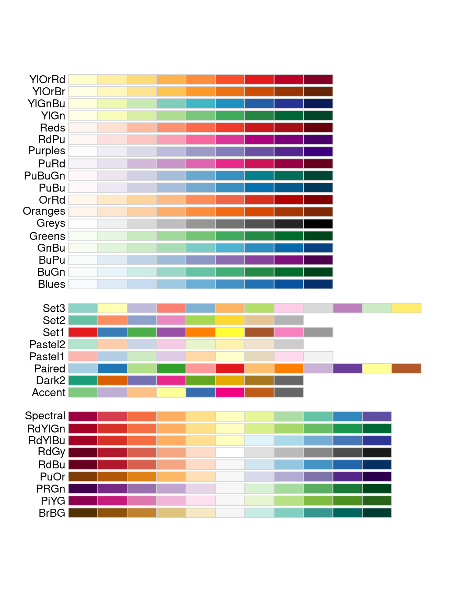
Figure 2.11: Palettes available through the RColorBrewer package.
Take the extra time to use a well-designed color palette. Accept that those who work with color for a living will probably choose better colors than you.
Other excellent perceptually distinct color palettes are provided by the viridis package. These palettes mimic those that are used in the matplotlib plotting library for Python. The viridis palettes are also accessible in ggplot2 through, for example, the scale_color_viridis() function.
2.2.3 Dissecting data graphics
With a little practice, one can learn to dissect data graphics in terms of the taxonomy outlined above. For example, your basic scatterplot uses position in the Cartesian plane with linear scales to show the relationship between two variables. In what follows, we identify the visual cues, coordinate system, and scale in a series of simple data graphics.
- The bar graph in Figure 2.12 displays the average score on the math portion of the 1994–1995 SAT (with possible scores ranging from 200 to 800) among states for whom at least two-thirds of the students took the SAT.
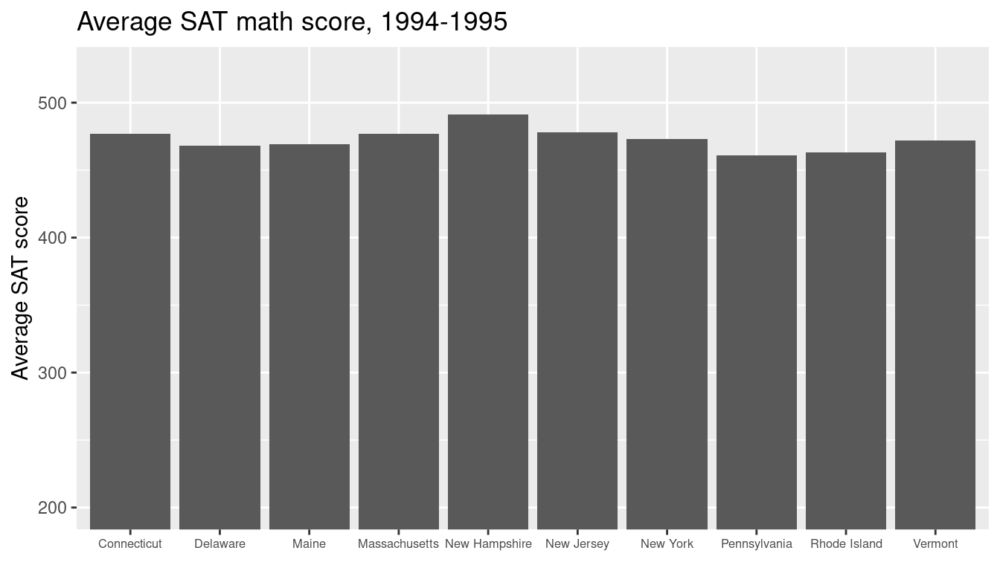
Figure 2.12: Bar graph of average SAT scores among states with at least two-thirds of students taking the test.
This plot uses the visual cue of length to represent the math SAT score on the vertical axis with a linear scale. The categorical variable of state is arrayed on the horizontal axis. Although the states are ordered alphabetically, it would not be appropriate to consider the state variable to be ordinal, since the ordering is not meaningful in the context of math SAT scores. The coordinate system is Cartesian, although as noted previously, the horizontal coordinate is meaningless. Context is provided by the axis labels and title. Note also that since 200 is the minimum score possible on each section of the SAT, the vertical axis has been constrained to start at 200.
- Next, we consider a time series that shows the progression of the world record times in the 100-meter freestyle swimming event for men and women. Figure 2.13 displays the times as a function of the year in which the new record was set.
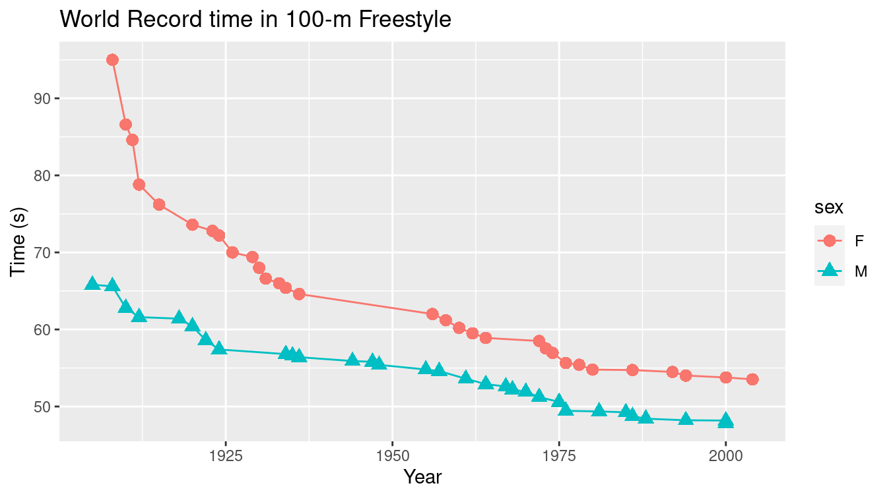
Figure 2.13: Scatterplot of world record time in 100-m freestyle swimming.
At some level this is simply a scatterplot that uses position on both the vertical and horizontal axes to indicate swimming time and chronological time, respectively, in a Cartesian plane. The numeric scale on the vertical axis is linear, in units of seconds, while the scale on the horizontal axis is also linear, measured in years. But there is more going on here. Color is being used as a visual cue to distinguish the categorical variable sex. Furthermore, since the points are connected by lines, direction is being used to indicate the progression of the record times. (In this case, the records can only get faster, so the direction is always down.) One might even argue that angle is being used to compare the descent of the world records across time and/or gender. In fact, in this case shape is also being used to distinguish sex.
- Next, we present two pie charts in Figure 2.14 indicating the different substance of abuse for subjects in the Health Evaluation and Linkage to Primary Care (HELP) clinical trial (“Linking Alcohol and Drug Dependent Adults to Primary Medicalcare: Aa Randomized Controlled Trial of a Multidisciplinaryhealth Intervention in a Detoxification Unit” 2003). Each subject was identified with involvement with one primary substance (alcohol, cocaine, or heroin). On the right, we see the distribution of substance for housed (no nights in shelter or on the street) participants is fairly evenly distributed, while on the left, we see the same distribution for those who were homeless one or more nights (more likely to have alcohol as their primary substance of abuse).
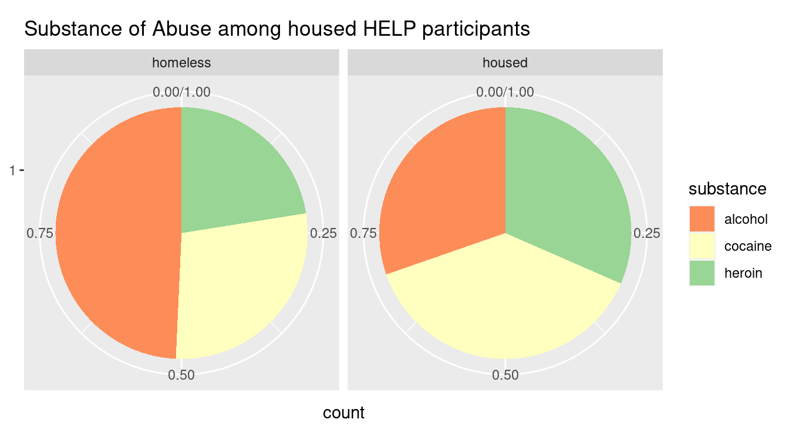
Figure 2.14: Pie charts showing the breakdown of substance of abuse among HELP study participants, faceted by homeless status. Compare this to Figure 3.13.
This graphic uses a radial coordinate system and the visual cue of color to distinguish the three levels of the categorical variable substance.
The visual cue of angle is being used to quantify the differences in the proportion of patients using each substance.
Are you able to accurately identify these percentages from the figure? The actual percentages are shown as follows.
# A tibble: 3 × 3
substance Homeless Housed
<fct> <chr> <chr>
1 alcohol n = 103 (49.3%) n = 74 (30.3%)
2 cocaine n = 59 (28.2%) n = 93 (38.1%)
3 heroin n = 47 (22.5%) n = 77 (31.6%)This is a case where a simple table of these proportions is more effective at communicating the true differences than this—and probably any—data graphic. Note that there are only six data points presented, so any graphic is probably gratuitous.
Don’t use pie charts, except perhaps in small multiples.
- Finally, in Figure 2.15 we present a choropleth map showing the population of Massachusetts by the 2010 Census tracts.
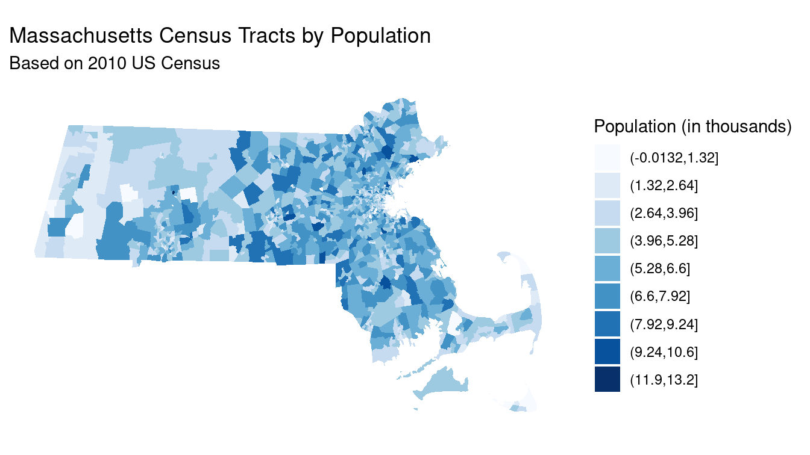
Figure 2.15: Choropleth map of population among Massachusetts Census tracts, based on 2018 American Community Survey.
Clearly, we are using a geographic coordinate system here, with latitude and longitude on the vertical and horizontal axes, respectively. (This plot is not projected: More information about projection systems is provided in Chapter 17.) Shade is once again being used to represent the quantity population, but here the scale is more complicated. The ten shades of blue have been mapped to the deciles of the census tract populations, and since the distribution of population across these tracts is right-skewed, each shade does not correspond to a range of people of the same width, but rather to the same number of tracts that have a population in that range. Helpful context is provided by the title, subtitle, and legend.
2.3 Importance of data graphics: Challenger
On January 27th, 1986, engineers at Morton Thiokol, who supplied solid rocket motors (SRMs) to NASA for the space shuttle, recommended that NASA delay the launch of the space shuttle Challenger due to concerns that the cold weather forecast for the next day’s launch would jeopardize the stability of the rubber O-rings that held the rockets together. These engineers provided 13 charts that were reviewed over a two-hour conference call involving the engineers, their managers, and NASA. The engineers’ recommendation was overruled due to a lack of persuasive evidence, and the launch proceeded on schedule. The O-rings failed in exactly the manner the engineers had feared 73 seconds after launch, Challenger exploded, and all seven astronauts on board died (Tufte 1997).
In addition to the tragic loss of life, the incident was a devastating blow to NASA and the United States space program. The hand-wringing that followed included a two-and-a-half year hiatus for NASA and the formation of the Rogers Commission to study the disaster. What became clear is that the Morton Thiokol engineers had correctly identified the key causal link between temperature and O-ring damage. They did this using statistical data analysis combined with a plausible physical explanation: in short, that the rubber O-rings became brittle in low temperatures. (This link was famously demonstrated by legendary physicist and Rogers Commission member Richard Feynman during the hearings, using a glass of water and some ice cubes (Tufte 1997).) Thus, the engineers were able to identify the critical weakness using their domain knowledge—in this case, rocket science—and their data analysis.
Their failure—and its horrific consequences—was one of persuasion: They simply did not present their evidence in a convincing manner to the NASA officials who ultimately made the decision to proceed with the launch. More than 30 years later this tragedy remains critically important. The evidence brought to the discussions about whether to launch was in the form of hand written data tables (or “charts”), but none were graphical. In his sweeping critique of the incident, Edward Tufte created a powerful scatterplot similar to Figures 2.16 and 2.17, which were derived from data that the engineers had at the time, but in a far more effective presentation (Tufte 1997).
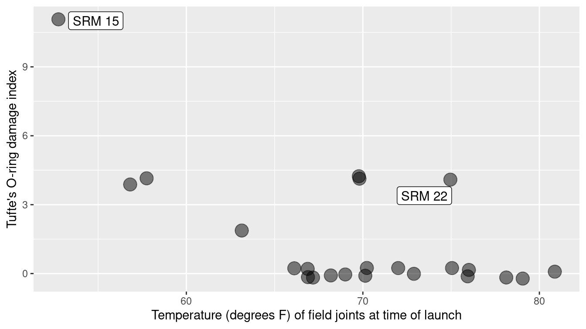
Figure 2.16: A scatterplot with smoother demonstrating the relationship between temperature and O-ring damage on solid rocket motors. The dots are semi-transparent, so that darker dots indicate multiple observations with the same values.
Figure 2.16 indicates a clear relationship between the ambient temperature and O-ring damage on the solid rocket motors. To demonstrate the dramatic extrapolation made to the predicted temperature on January 27th, 1986, Tufte extended the horizontal axis in his scatterplot (Figure 2.17) to include the forecast temperature. The huge gap makes plain the problem with extrapolation. Reprints of two Morton Thiokol data graphics are shown in Figures 2.18 and 2.19 (Tufte 1997).
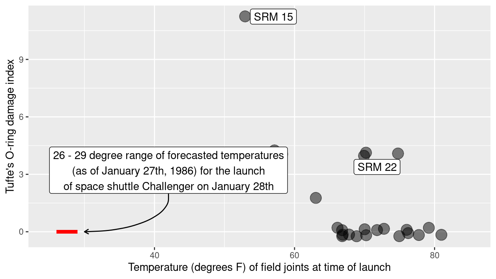
Figure 2.17: A recreation of Tufte’s scatterplot demonstrating the relationship between temperature and O-ring damage on solid rocket motors.
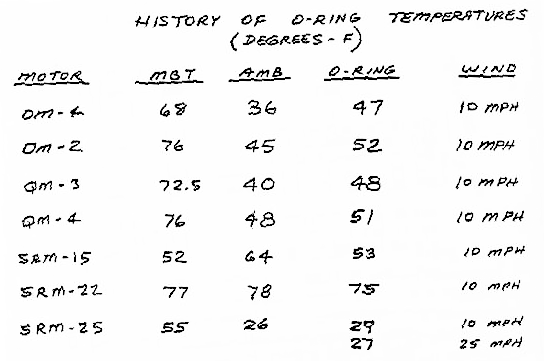
Figure 2.18: One of the original 13 charts presented by Morton Thiokol engineers to NASA on the conference call the night before the Challenger launch. This is one of the more data-intensive charts.
Figure 2.19: Evidence presented during the congressional hearings after the Challenger explosion.
Tufte provides a full critique of the engineers’ failures (Tufte 1997), many of which are instructive for data scientists.
- Lack of authorship: There were no names on any of the charts. This creates a lack of accountability. No single person was willing to take responsibility for the data contained in any of the charts. It is much easier to refute an argument made by a group of nameless people, than to a single or group of named people.
- Univariate analysis: The engineers provided several data tables, but all were essentially univariate. That is, they presented data on a single variable, but did not illustrate the relationship between two variables. Note that while Figure 2.18 does show data for two different variables, it is very hard to see the connection between the two in tabular form. Since the crucial connection here was between temperature and O-ring damage, this lack of bivariate analysis was probably the single most damaging omission in the engineers’ presentation.
- Anecdotal evidence: With such a small sample size, anecdotal evidence can be particularly challenging to refute. In this case, a bogus comparison was made based on two observations. While the engineers argued that SRM-15 had the most damage on the coldest previous launch date (see Figure 2.17), NASA officials were able to counter that SRM-22 had the second-most damage on one of the warmer launch dates. These anecdotal pieces of evidence fall apart when all of the data are considered in context—in Figure 2.17, it is clear that SRM-22 is an outlier that deviates from the general pattern—but the engineers never presented all of the data in context.
- Omitted data: For some reason, the engineers chose not to present data from 22 other flights, which collectively represented 92% of launches. This may have been due to time constraints. This dramatic reduction in the accumulated evidence played a role in enabling the anecdotal evidence outlined above.
- Confusion: No doubt working against the clock, and most likely working in tandem, the engineers were not always clear about two different types of damage: erosion and blow-by. A failure to clearly define these terms may have hindered understanding on the part of NASA officials.
- Extrapolation: Most forcefully, the failure to include a simple scatterplot of the full data obscured the “stupendous extrapolation” (Tufte 1997) necessary to justify the launch. The bottom line was that the forecast launch temperature (between 26 and 29 degrees Fahrenheit) was so much colder than anything that had occurred previously, any model for O-ring damage as a function of temperature would be untested.
When more than a handful of observations are present, data graphics are often more revealing than tables. Always consider alternative representations to improve communication.
Tufte notes that the cardinal sin of the engineers was a failure to frame the data in relation to what? The notion that certain data may be understood in relation to something is perhaps the fundamental and defining characteristic of statistical reasoning. We will follow this thread throughout the book.
Always ensure that graphical displays are clearly described with appropriate axis labels, additional text descriptions, and a caption.
We present this tragic episode in this chapter as motivation for a careful study of data visualization. It illustrates a critical truism for practicing data scientists: Being right isn’t enough—you have to be convincing. Note that Figure 2.19 contains the same data that are present in Figure 2.17 but in a far less suggestive format. It just so happens that for most human beings, graphical explanations are particularly persuasive. Thus, to be a successful data analyst, one must master at least the basics of data visualization.
2.4 Creating effective presentations
Giving effective presentations is an important skill for a data scientist. Whether these presentations are in academic conferences, in a classroom, in a boardroom, or even on stage, the ability to communicate to an audience is of immeasurable value. While some people may be naturally more comfortable in the limelight, everyone can improve the quality of their presentations.
A few pieces of general advice are warranted (Ludwig 2012):
- Budget your time: Often you will only have a few minutes to speak and usually a few additional minutes to answer questions. If your talk runs too short or too long, it makes you seem unprepared. Rehearse your talk several times in order to get a better feel for your timing. Note also that you may have a tendency to talk faster during your actual talk than you will during your rehearsal. Talking faster in order to speed up is a bad strategy—you are much better off simply cutting material ahead of time. You will probably have a hard time getting through \(x\) slides in \(x\) minutes.
Talking faster in order to speed up is not a good strategy—you are much better off simply cutting material ahead of time or moving to a key slide or conclusion.
- Don’t write too much on each slide: You don’t want people to have to read your slides, because if the audience is reading your slides, then they aren’t listening to you. You want your slides to provide visual cues to the points that you are making—not substitute for your spoken words. Concentrate on graphical displays and bullet-pointed lists of ideas.
- Put your problem in context: Remember that (in most cases) most of your audience will have little or no knowledge of your subject matter. The easiest way to lose people is to dive right into technical details that require prior domain knowledge. Spend a few minutes at the beginning of your talk introducing your audience to the most basic aspects of your topic and presenting some motivation for what you are studying.
- Speak loudly and clearly: Remember that (in most cases) you know more about your topic that anyone else in the room, so speak and act with confidence!
- Tell a story, but not necessarily the whole story: It is unrealistic to expect that you can tell your audience everything that you know about your topic in \(x\) minutes. You should strive to convey the big ideas in a clear fashion but not dwell on the details. Your talk will be successful if your audience is able to walk away with an understanding of what your research question was, how you addressed it, and what the implications of your findings are.
2.5 The wider world of data visualization
Thus far our discussion of data visualization has been limited to static, two-dimensional data graphics. However, there are many additional ways to visualize data. While Chapter 3 focuses on static data graphics, Chapter 14 presents several cutting-edge tools for making interactive data visualizations. Even more broadly, the field of visual analytics is concerned with the science behind building interactive visual interfaces that enhance one’s ability to reason about data.
Finally, we have data art. You can do many things with data. On one end of the spectrum, you might be focused on predicting the outcome of a specific response variable. In such cases, your goal is very well-defined and your success can be quantified. On the other end of the spectrum are projects called data art, wherein the meaning of what you are doing with the data is elusive, but the experience of viewing the data in a new way is in itself meaningful.
Consider Memo Akten and Quayola’s Forms, which was inspired by the physical movement of athletes in the Commonwealth Games. Through video analysis, these movements were translated into three-dimensional digital objects shown in Figure 2.20. Note how the image in the upper-left is evocative of a swimmer surfacing after a dive. When viewed as a movie, Forms is an arresting example of data art.
Watch Forms (process) from Memo Akten on Vimeo.
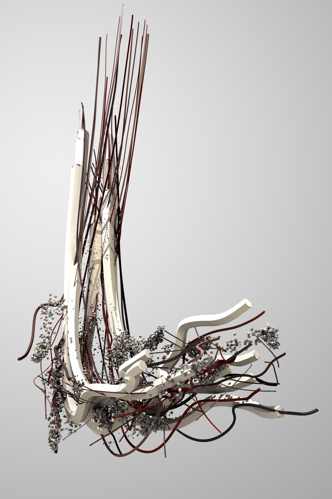
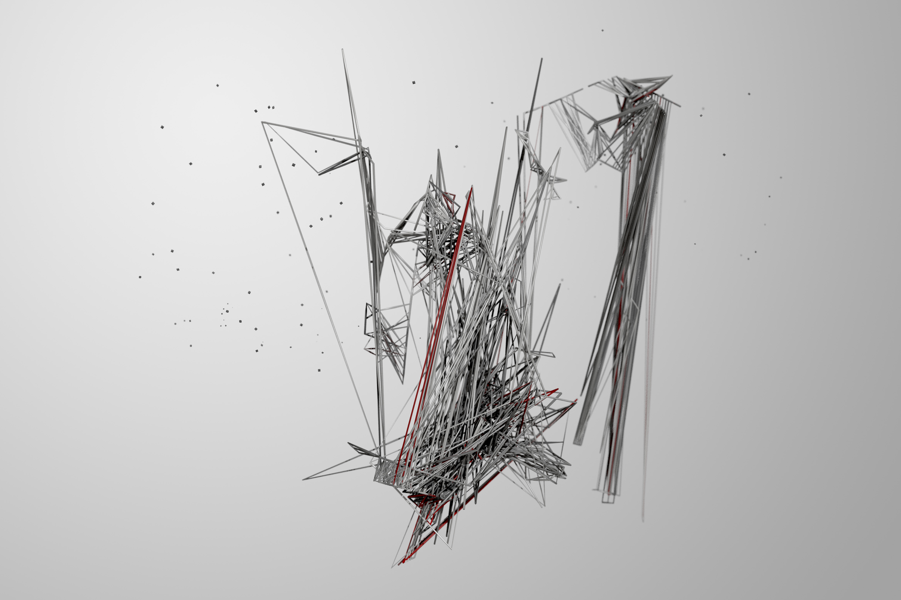
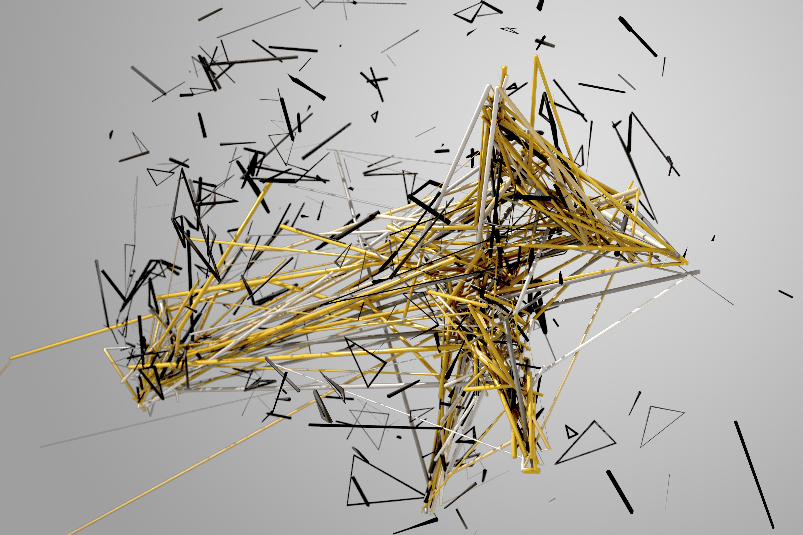
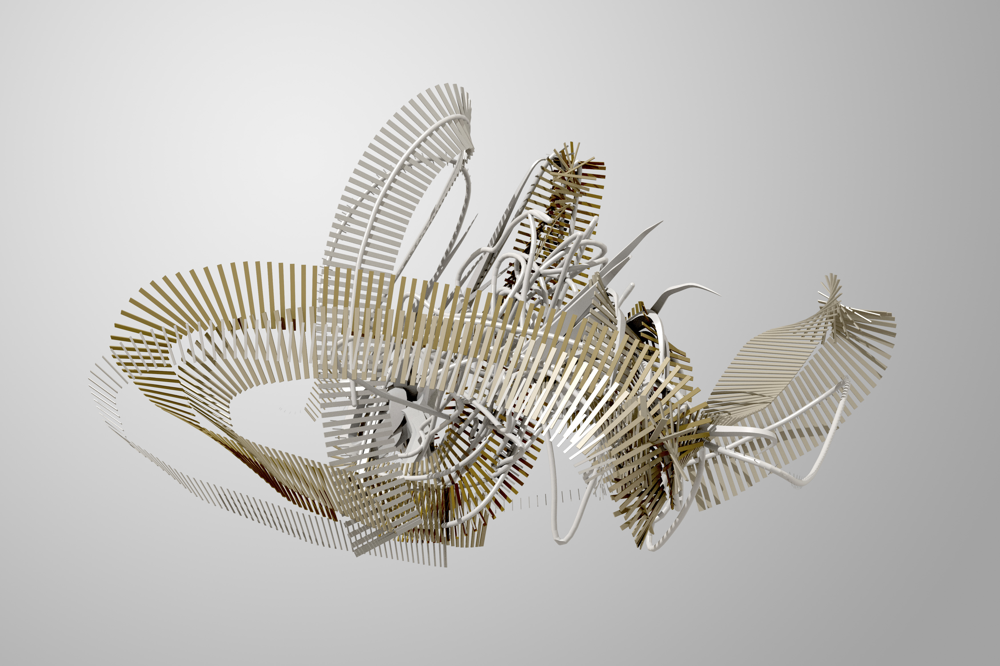
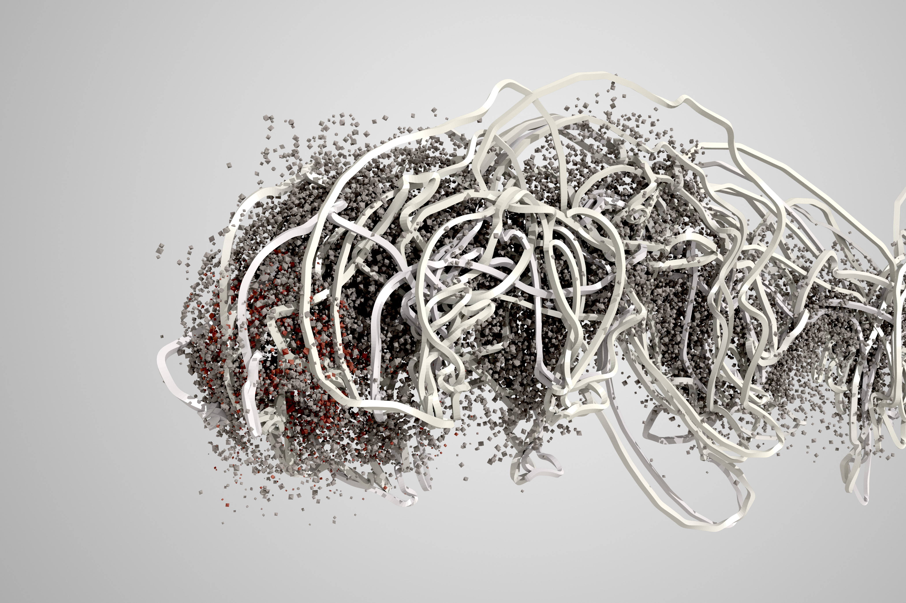
Figure 2.20: Still images from Forms, by Memo Akten and Quayola. Each image represents an athletic movement made by a competitor at the Commonwealth Games, but reimagined as a collection of moving three-dimensional digital objects. Reprinted with permission.
Successful data art projects require both artistic talent and technical ability. Before Us is the Salesman’s House is a live, continuously-updating exploration of the online marketplace eBay. This installation was created by statistician Mark Hansen and digital artist Jer Thorpe and is projected on a big screen as you enter eBay’s campus.
Watch Before us is the Salesman’s House—Three Cycles from blprnt on Vimeo.
The display begins by pulling up Arthur Miller’s classic play Death of a Salesman, and “reading” the text of the first chapter. Along the way, several nouns are plucked from the text (e.g., flute, refrigerator, chair, bed, trophy, etc.). For each in succession, the display then shifts to a geographic display of where things with that noun in the description are currently being sold on eBay, replete with price and auction information. (Note that these descriptions are not always perfect. In the video, a search for “refrigerator” turns up a T-shirt of former Chicago Bears defensive end William [Refrigerator] Perry.)
Next, one city where such an item is being sold is chosen, and any classic books of American literature being sold nearby are collected. One is chosen, and the cycle returns to the beginning by “reading” the first page of that book. This process continues indefinitely. When describing the exhibit, Hansen spoke of “one data set reading another.” It is this interplay of data and literature that makes such data art projects so powerful.
Finally, we consider another Mark Hansen collaboration, this time with Ben Rubin and Michele Gorman. In Shakespeare Machine, 37 digital LCD blades—each corresponding to one of Shakespeare’s plays—are arrayed in a circle. The display on each blade is a pattern of words culled from the text of these plays. First, pairs of hyphenated words are shown. Next, Boolean pairs (e.g., “good or bad”) are found. Third, articles and adjectives modifying nouns (e.g., “the holy father”). In this manner, the artistic masterpieces of Shakespeare are shattered into formulaic chunks. In Chapter 19, we will learn how to use regular expressions to find the data for Shakespeare Machine.
2.6 Further resources
While issues related to data visualization pervade this entire text, they will be the particular focus of Chapters 3 (Data visualization II), 14 (Data visualization III), and 17 (Geospatial data).
No education in data graphics is complete without reading Tufte’s Visual Display of Quantitative Information (Tufte 2001), which also contains a description of John Snow’s cholera map (see Chapter 17). For a full description of the Challenger incident, see (Tufte 1997). Tufte has also published two other landmark books (Tufte 1990, 2006), as well as reasoned polemics about the shortcomings of PowerPoint (Tufte 2003). Cleveland and McGill (1984) provide the foundation for Yau’s taxonomy (Yau 2013). Yau (2011) provides many examples of thought-provoking data visualizations, particularly data art. The grammar of graphics was first described by Wilkinson et al. (2005). Hadley Wickham (2016) implemented ggplot2 based on this formulation.
Many important data graphics were developed by Tukey (1990). A. Gelman, Pasarica, and Dodhia (2002) have also written persuasively about data graphics in statistical journals. Gelman discusses a set of canonical data graphics as well as Tufte’s suggested modifications to them. D. Nolan and Perrett (2016) discuss data visualization assignments and rubrics that can be used to grade them. Steven J. Murdoch has created some R functions for drawing the kind of modified diagrams described in Tufte (2001). These also appear in the ggthemes package (Arnold 2019).
Cynthia Brewer’s color palettes are available at http://colorbrewer2.org and through the RColorBrewer package. Her work is described in more detail in Brewer (1994) and Brewer (1999). The viridis (Garnier 2021a) and viridisLite (Garnier 2021b) packages provide matplotlib-like palettes for R. Ram and Wickham (2018) created the whimsical color palette that evokes Wes Anderson’s distinctive movies. Technically Speaking is an NSF-funded project for presentation advice that contains instructional videos for students (Ludwig 2012).
2.7 Exercises
Problem 1 (Easy): Consider the following data graphic.
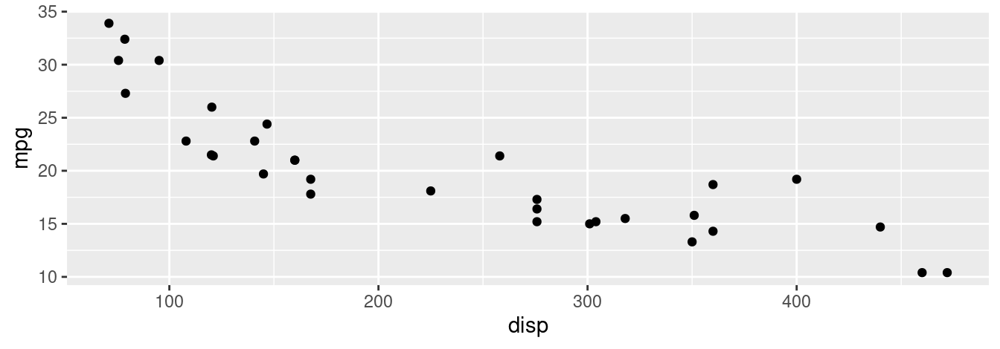
The am variable takes the value 0 if the car has automatic transmission and 1 if the car has manual transmission.
How could you differentiate the cars in the graphic based on their transmission type?
Problem 2 (Medium): Pick one of the Science Notebook entries at https://www.edwardtufte.com/tufte (e.g., “Making better inferences from statistical graphics”). Write a brief reflection on the graphical principles that are illustrated by this entry.
Problem 3 (Medium): Find two graphs published in a newspaper or on the internet in the last two years.
Identify a graphical display that you find compelling. What aspects of the display work well, and how do these relate to the principles established in this chapter? Include a screen shot of the display along with your solution.
Identify a graphical display that you find less than compelling. What aspects of the display don’t work well? Are there ways that the display might be improved? Include a screen shot of the display along with your solution.
Problem 4 (Medium): Find two scientific papers from the last two years in a peer-reviewed journal (Nature and Science are good choices).
Identify a graphical display that you find compelling. What aspects of the display work well, and how do these relate to the principles established in this chapter? Include a screen shot of the display along with your solution.
Identify a graphical display that you find less than compelling. What aspects of the display don’t work well? Are there ways that the display might be improved? Include a screen shot of the display along with your solution.
Problem 5 (Medium): Consider the two graphics related to The New York Times “Taxmageddon” article at http://www.nytimes.com/2012/04/15/sunday-review/coming-soon-taxmageddon.html. The first is “Whose Tax Rates Rose or Fell” and the second is “Who Gains Most From Tax Breaks.”
- Examine the two graphics carefully. Discuss what you think they convey. What story do the graphics tell?
- Evaluate both graphics in terms of the taxonomy described in this chapter. Are the scales appropriate? Consistent? Clearly labeled? Do variable dimensions exceed data dimensions?
- What, if anything, is misleading about these graphics?
Problem 6 (Medium): Consider the data graphic http://tinyurl.com/nytimes-unplanned about birth control methods.
- What quantity is being shown on the \(y\)-axis of each plot?
- List the variables displayed in the data graphic, along with the units and a few typical values for each.
- List the visual cues used in the data graphic and explain how each visual cue is linked to each variable.
- Examine the graphic carefully. Describe, in words, what information you think the data graphic conveys. Do not just summarize the data—interpret the data in the context of the problem and tell us what it means. (Note: information is meaningful to human beings—it is not the same thing as data.)
2.8 Supplementary exercises
Available at https://mdsr-book.github.io/mdsr2e/ch-vizI.html#datavizI-online-exercises
Problem 1 (Easy): Consider the following data-driven image, available for purchase at NBA Playoff Rings: https://cdn.shopify.com/s/files/1/0144/6552/products/NBA-Basketball-2013-_6_1024x1024.jpg
{kind=link}
- Identify the visual cues, coordinate system, and scale(s).
- How many variables are depicted in the graphic? Explicitly link each variable to a visual cue that you listed above.
- Critique this data graphic using the taxonomy described in this chapter.
Problem 2 (Easy): 2016 ELECTION: Consider the following data graphic about results from the 2016 presidential election in Massachusetts.

What type of color palette is used in this graphic?
Problem 3 (Easy): Choose one of the data graphics listed at http://mdsr-book.github.io/exercises.html#exercise_23 and answer the following questions. Be sure to indicate which graphical display you picked.
- World’s Top 10 Best Selling Cigarette Brands, 2004-2007
GNPD Usage by Food Categories- UK University Rankings
- Childhood Obesity in the US
- Relationship between ages and psychosocial maturity
{kind=link}
{kind=link}
{kind=link}
{kind=link}
- Identify the visual cues, coordinate system, and scale(s).
- How many variables are depicted in the graphic? Explicitly link each variable to a visual cue that you listed above.
- Critique this data graphic using the taxonomy described in this chapter.
Problem 4 (Medium): Answer the following questions for each of the following collections of data graphics listed at (http://mdsr-book.github.io/exercises.html#exercise_24).
Briefly (one paragraph) critique the designer’s choices. Would you have made different choices? Why or why not?
Note: Each link contains a collection of many data graphics, and we don’t expect (or want) you to write a full report on each individual graphic. But each collection shares some common stylistic elements. You should comment on a few things that you notice about the design of the collection.
Problem 5 (Medium): Consider one of the more complicated data graphics listed at (http://mdsr-book.github.io/exercises.html#exercise_25):
- What story does the data graphic tell? What is the main message that you take away from it?
- Can the data graphic be described in terms of the taxonomy presented in this chapter? If so, list the visual cues, coordinate system, and scales(s) as you did in Problem 2(a). If not, describe the feature of this data graphic that lies outside of that taxonomy.
- Critique and/or praise the visualization choices made by the designer. Do they work? Are they misleading? Thought-provoking? Brilliant? Are there things that you would have done differently? Justify your response.
DFLstands for the Minnesota Democratic–Farmer–Labor Party, which is affiliated with the Democratic Party.↩︎